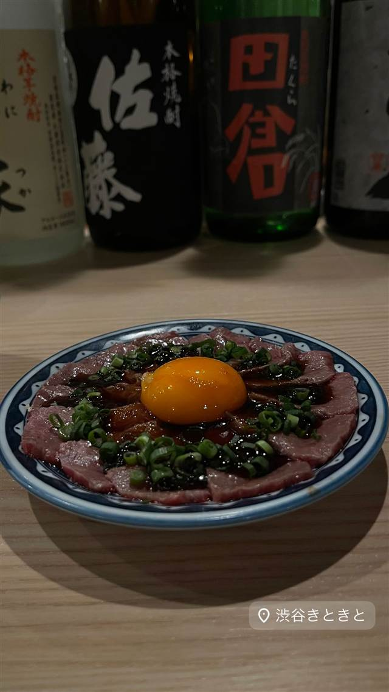

海鮮・魚 · 海鮮居酒屋 · 今泉
博多炉端 魚男 FISHMAN
長浜市場直送の魚介をエスプーマなどで彩る創作炉端焼き
博多炉端 魚男 フィッシュマン（...
2009年開業の福岡・薬院の海鮮居酒屋。長浜市場直送の魚介を使った炉端焼きや、エスプーマなどを使った創作料理が持ち味。2023年には「食べて体が整う」をテーマにリニューアルした。
TRIVIA
豆知識
- コロナ禍を経て2023年9月に「食べて体が整う」をコンセプトにリニューアルした
- 分子栄養学のアドバイザーと共同開発したメニューを提供している
REVIEWS
世間の評判
3.48食べログ
新鮮な海鮮と目の前の調理演出
- 新鮮な素材を使った海鮮料理の質を評価する声が多い
- 目の前で調理するパフォーマンスを評価する声が多い
- 値段は安くないが品質に見合うという声が多い
- 丁寧なスタッフの接客を評価する声が多い
食べログ 口コミ753件
| 創業 | 2009年オープン |
|---|---|
| 看板 | 長浜鮮魚市場直送の海鮮料理と、炭火・藁焼きの炉端焼き |
| こだわり | エスプーマや液体窒素を使った創作料理など、味だけでなく見た目の驚きも重視した調理法を取り入れている |
| どこから | 遠方 |
| 営業時間 | 月〜日 11:00-14:30、16:30-23:00 |
| 場所 | 薬院駅 福岡県福岡市中央区今泉1-4-23 |
| メモ | 薬院駅から徒歩3分。昼は海鮮食堂、夜は炉端焼き居酒屋として営業 |
食べたもの：蟹・海鮮盛り
OFFICIAL
店からの知らせ
その日の限定や臨時の休みは、店のXに出ます。
NEARBY
近い店・同じ系統の店
-
 海鮮居酒屋 赤坂
みやざき料理 でんでんでん
宮崎直送の地鶏と麦を混ぜたごはんの冷や汁とチキン南蛮
昼 ¥1,000～¥1,999 夜 ¥5,000～¥5,999
海鮮居酒屋 赤坂
みやざき料理 でんでんでん
宮崎直送の地鶏と麦を混ぜたごはんの冷や汁とチキン南蛮
昼 ¥1,000～¥1,999 夜 ¥5,000～¥5,999
-
 海鮮居酒屋 三軒茶屋駅
三茶呑場マルコ
新潟の塩引鮭とイクラを使う名物の締め釜飯
夜 ¥4,000～¥4,999
海鮮居酒屋 三軒茶屋駅
三茶呑場マルコ
新潟の塩引鮭とイクラを使う名物の締め釜飯
夜 ¥4,000～¥4,999
-
 海鮮居酒屋 武蔵溝ノ口駅／溝の口駅
魚貝三昧 雛 1号店
築地から直送される鮮魚を使った刺身が自慢
夜 ¥5,000～¥5,999
海鮮居酒屋 武蔵溝ノ口駅／溝の口駅
魚貝三昧 雛 1号店
築地から直送される鮮魚を使った刺身が自慢
夜 ¥5,000～¥5,999
-
 海鮮居酒屋 渋谷
魚屋豪椀
築地直送の鮮魚と活き車海老の踊り食いが名物
夜 ¥4,000～¥4,999
海鮮居酒屋 渋谷
魚屋豪椀
築地直送の鮮魚と活き車海老の踊り食いが名物
夜 ¥4,000～¥4,999
-
 海鮮居酒屋 新橋駅
魚焼男 新橋本店
豊洲・沼津港から毎朝直送の鮮魚を炭火でじっくり焼く
夜 ¥5,000～¥5,999
海鮮居酒屋 新橋駅
魚焼男 新橋本店
豊洲・沼津港から毎朝直送の鮮魚を炭火でじっくり焼く
夜 ¥5,000～¥5,999
-

海鮮居酒屋 神泉 渋谷きときと（Shibuya kitokito） 富山弁で新鮮を意味する店名の氷見牛と旬の鮮魚 夜 ¥5,000～¥5,999